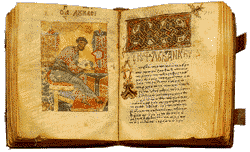

|  | ЗА СЛАВА НА СВЕТАТА, ЕДИНОСЪЩНА, ЖИВОТВОРЯЩА И НЕРАЗДЕЛНА ТРОИЦА – ОТЦА И СИНА И СВЕТАГО ДУХА, С БЛАГОСЛОВЕНИЕ НА СВ. СИНОД НА БЪЛГАРСКАТА ПРАВОСЛАВНА ЦЪРКВА |
ИЗДАВА СВ. СИНОД НА БЪЛГАРСКАТА ПРАВОСЛАВНА ЦЪРКВА
| Издания: | Описание: | Молитвеник | Съставител: Синодално издателство
Обeм: 360 стр. Формат: джобен ISBN: 978-954-8398-78-7, 2012 г. Цена: 5.00 лв. |
|---|---|
| Божествена литургия на св. Йоан Златоуст |
Цена: 3.00 лв. |